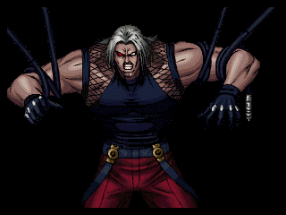
Omega Rugal 98
＜必殺技＞
ダークジェノサイド
+A/B
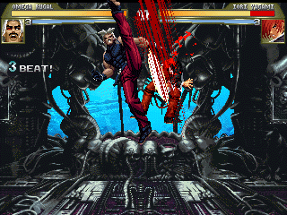
ルガールの代名詞的技。
長い無敵時間が有り、まず潰される事は無い。
攻撃判定も非常に大きい
グラビティスマッシュ（地上）
+X/Y
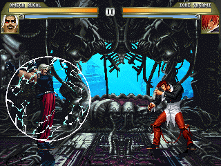
自分の周りにバリアを張りそれを飛ばす。
グラビティスマッシュ（空中）
空中で+X/Y
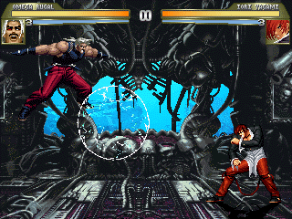
空中版。弱の方が遠くへ飛ぶ。
下降中は無防備。
バニシングラッシュ
+X/Y
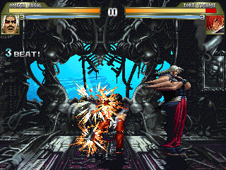
高速で突進し、すれ違い様に攻撃。
ガードされてもこちらが有利。
出だしは簡単に潰される。
ダークバリヤー
+A/B
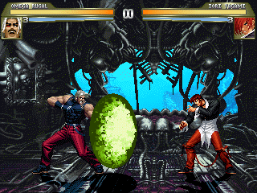
前方にバリアを出す。相手の飛び道具を消せる。
バリア自身にも攻撃判定がある。
＜超必殺技＞
ギガンテックプレッシャー
+X/Y/Z(X+Y) (L1/L2)
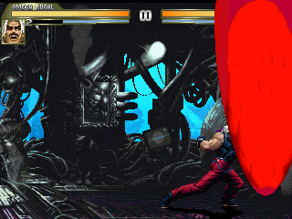
言わずと知れた超必。出は早いが
ガードされると反撃必至。
デストラクション・オメガ
+A/B/C(A+B) (L1/L2)
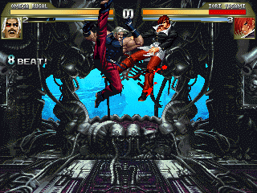
ルガール待望の(?)乱舞技。
出は速くノーリスク。威力も高い。
ルガールエクスキュージョン
+X/Y/Z(X+Y) (L1/L2)
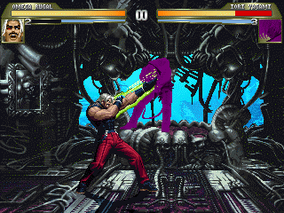
突進技。弱は出が早く、連続技になる。
強は遅いが無敵時間が長い。
ギガンテックプレッシャーがあるので使わないかも。
自爆
+X+Y(L1以上)
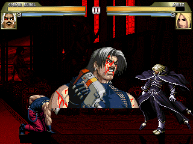
遊びで作った技。自爆は彼の趣味なので。
爆弾はゲージ一本につき一個。
最大三個。二個目以降の場所はランダム。
爆弾は攻撃すれば消える。
ストライカー
クリザリッド召喚
+S
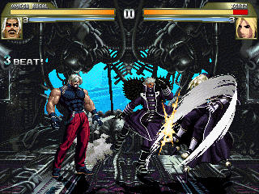
画面後ろから現われテュホンレイジ。
追い討ち可能。ゲージ消費は0。